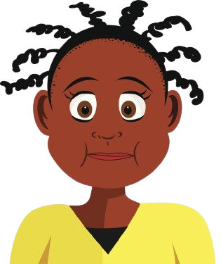

Human Mouth
Mouth is an oval-shaped cavity inside the skull. It's two main function is for eating and speaking;
while also used for breathing.
What Are The Parts Of It?
- Lips
- Vestibule
- Mouth Cavity
- Gums
- Teeth
- Hard & Soft Palate
- Tongue
- Salivary Glands
Did You Know?
- Without saliva, we would not be able taste anything.
- Your tongue contains as many bacteria as there are peole on Earth.
- Teeth starts to form before you are even born.
- It is best to close your mouth while swimming because chlorine can wear down your enamel.
- The tongue is the only muscle that works without skeletal support.
- There are approximately 10,000 taste buds in our mouth.
- The enamel on the surface of your teeth is the hardest substance in your whole body.